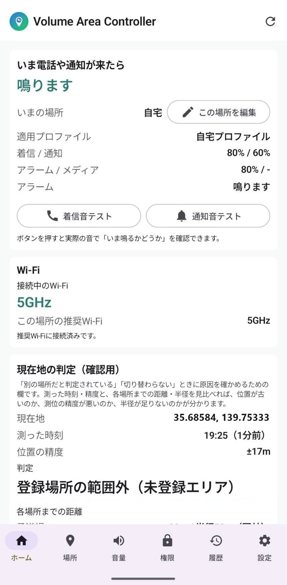
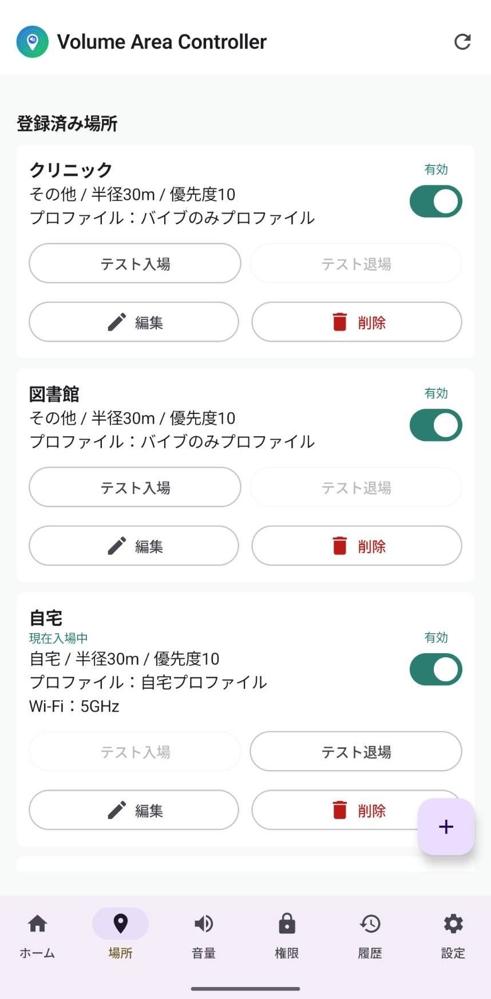

Androidアプリ・無料
Volume Area Controller
現在地に応じて、スマホの音量を自動で切り替える
APKをダウンロード（v1.5.58） 匿名アンケートに答える
配布ファイル更新：（日本時間）
音量エリアコントローラー（Volume Area Controller）は、いる場所に合わせて、スマホの音量を自動で切り替えるAndroidアプリです。 たとえば「職場ではマナーモード、家に帰ったら音が鳴るように」といった切り替えを、アプリが代わりにやってくれます。


できること
- 場所ごとに音量を決めておくと、着いたとき・離れたときに自動で切り替わります
- アプリを閉じていても切り替わります
- 着信音・通知音・アラーム・音楽や動画の音量と、バイブを設定できます
- 「いまだけ変えたい」ときは、一時的に切り替えることもできます
- 自宅のWi-Fiなどを登録すると、場所をより正確に見分けられます
- いつ切り替わったかを、履歴で確かめられます
- 設定をファイルに保存して、機種変更のときに引き継げます
使いはじめ
- アプリを開き、案内にしたがって位置情報を「常に許可」にします。
- 自宅や職場などの場所を、地図から登録します。
- それぞれの場所で使う音量を選びます。
登録した場所の外にいるときの音量も、アプリの中で決められます。
料金
無料です（広告・アプリ内課金はありません）。
ダウンロード（Android）
下のボタンから無料でダウンロードできます。
配布ファイル更新：（日本時間）
対象：Android 10 以降（Google Play 開発者サービスが入っている端末）
インストール方法
- 上のボタンからAPKをダウンロードします。
- ダウンロードしたファイルを開きます。
- 「不明なアプリのインストール」の許可を求められたら許可して、インストールします。
※インストールのときに警告が出ることがあります。提供元がこのサイト（masatools.pages.dev）であることを確かめてから進めてください。
※新しい版は、いま入っているアプリの上からそのままインストールできます。登録した設定も引き継がれます。
使う権限
- 位置情報（アプリの使用中）・必須 — 登録した場所にいるかどうかを調べるために使います。
- 位置情報（常に許可）・必須 — アプリを閉じている間も切り替えるために使います。
- 通知（任意） — 音量を切り替えたことなどのお知らせに使います。
- マナーモードの操作（任意） — 音もバイブも鳴らさない設定を使うときだけ必要です。
- 電池の最適化から外す（おすすめ） — スマホの省電力でアプリが止められないようにします。
位置情報や登録した場所は、スマホの中だけに保存し、外部へ送ることはありません。インターネットを使うのは、地図を表示するときと、場所を検索するときだけです。くわしくはプライバシーポリシーをご覧ください。
うまく切り替わらないときは
- 位置情報が「常に許可」になっているか確かめてください。「アプリの使用中のみ」だと、アプリを閉じている間は切り替わりません。
- スマホの省電力（電池の最適化）でアプリが止められていることがあります。対象から外すと安定します（アプリの中に設定への案内があります）。
- 建物の中などでは、場所の判定がずれることがあります。場所の範囲を広げるか、その場所のWi-Fiを登録してみてください。
- 機種によっては、通知と着信の音量がいっしょに変わることがあります。